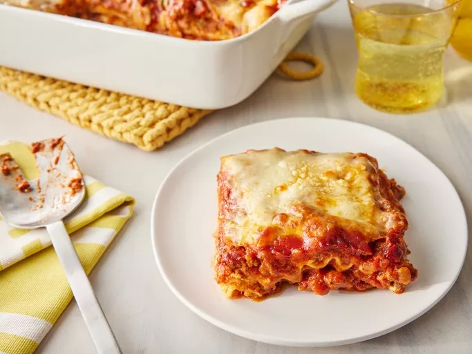

Lasagna
Description
Lasagna is a type of pasta that is made with layers of flat noodles and sauce.
Ingredients
- Lasagna noodles
- Ground beef
- Tomato sauce
- Mozzarella cheese
Steps
- Cook the lasagna noodles according to package directions.
- Brown the ground beef in a skillet.
- Add the tomato sauce to the beef and simmer for 10 minutes.
- Layer the noodles, beef sauce, and cheese in a baking dish.
- Bake at 375°F for 30 minutes or until golden brown.